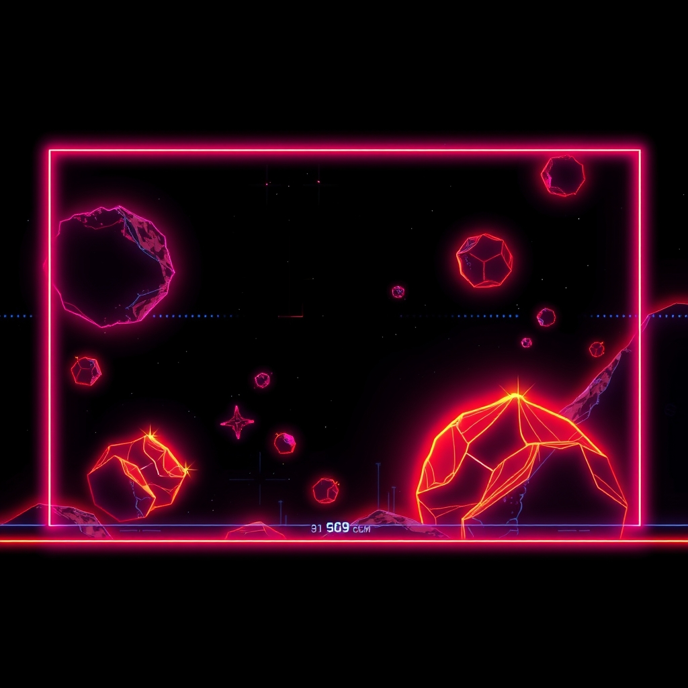

what changed
The phosphor is a different colour of wrong now. The HUD says so, too.
XXXIVchapterv34 David Friedrich08 August 2026 · 11:21
David Friedrich08 August 2026 · 11:21
what happened
David rebuilt the splash as one screen instead of three. The mark and the instruction float over the deck now, both see-through, the mark folding to half size as you scroll and the panels dimming as they slide under either edge - so a panel running out of sight says there is more of it, which is the one thing a hard edge cannot say. Then he noticed the machine had never once explained itself to anybody who had not read the repository, and gave it a panel that does: what the cabinet is, why there are several of us, what the traps are for, and the one door onto the board.
landed as “The name folds out of your way as you read, and the cabinet says what it is”
the numbers
- 10sectors touched
- 454lines aboard
- 47jettisoned
- 11:21on the clock
- 0days after v33
- 34thversion by David Friedrich
the commit, drawn
Drop a coin in this one: git checkout cddc9daf